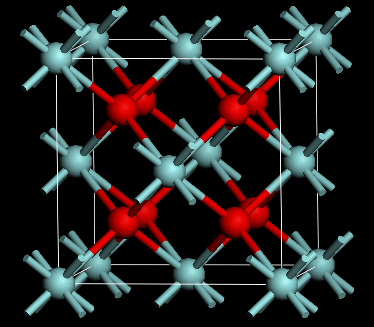
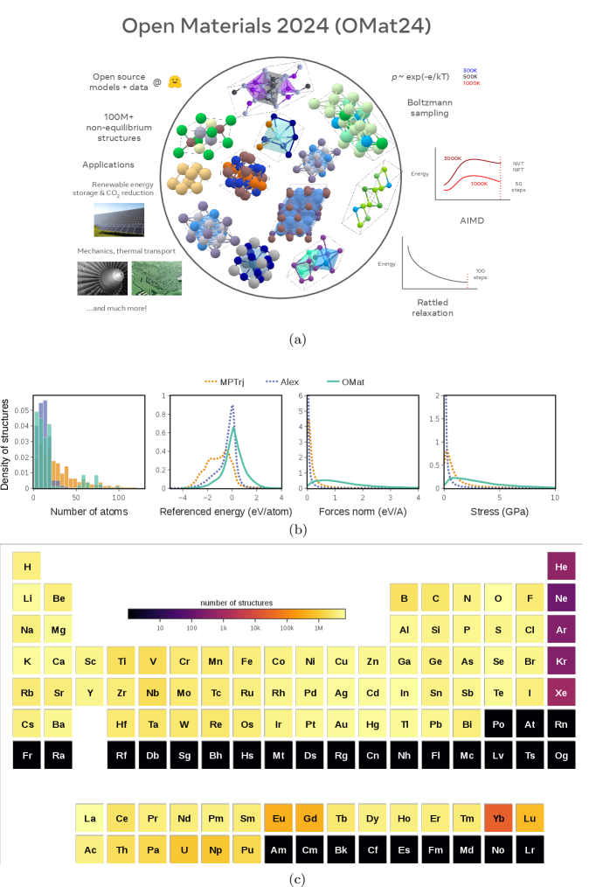

Executive Summary
The real change AI brought to science isn't producing answers faster. It is reshaping the first step: which questions and conjectures get asked at all. In 2021, when DeepMind and a team of mathematicians showed a deep-learning model the geometry of 240,000 knots, the model proposed, as a conjecture, a connection between two quantities that humans had never noticed (Davies et al., Nature, 2021). Discovery usually moves through three stages: forming a conjecture, searching for a proof or solution, and verifying the result. For years, AI lived in the middle stage — fast computation. The inflection point now is that AI has climbed into the first stage, the one where the question itself is made. This piece asks how far that shift has actually gone in mathematics and in physics and materials.
The shift reads accurately only with its conditions attached, not as a headline. In mathematics, AI came within one point of the silver-medal bar (28/42) at the 2024 International Mathematical Olympiad, and a year later reached the officially certified gold standard at 35/42, working from natural language alone. But the 2024 result depended on experts hand-translating each problem into a formal language and several days of computation. In materials science, DeepMind's GNoME predicted 2.2 million stable crystal structures, yet over the same period an external lab actually synthesized and confirmed 736 of them. Between prediction and verification there is always a gap of three or four orders of magnitude.
So the question that remains is trust. The more questions AI asks, the more it matters which data boundary those questions came from. The most common failure in AI-driven materials discovery is mistaking a disordered phase for an ordered one — a direct transfer of bias from training data that assumes the perfect order of absolute zero into the model itself. Trust in discovery ultimately rests on the quality, coverage, and traceable provenance of training and verification data. That is precisely the layer Pebblous works on through AI-Ready data and DataClinic.
Editor's note. Anything that measures the boundary between data and AI catches our attention at Pebblous — all the more when it concerns trust in fundamental scientific discovery. This piece does not ask whether AI "replaces" discovery. It separates, stage by stage, which part of discovery AI handled and how humans and machines verified the result. It uses Nature's June 2026 feature (d41586-026-01820-1) as a point of entry, but every figure was re-checked against the primary papers.
Key Figures
Four numbers form this article's spine. Each pairs a "claimed scale" with a "verified scale."
2.2M → 736
Predicted vs. verified materials
2.2M predicted by GNoME, 736 synthesized externally
28 → 35
IMO silver → gold (/42)
2024 silver-level → 2025 certified gold
496 → 512
cap-set lower bound raised
FunSearch — biggest gain in 20 years
~70%
estimated non-reproducible
reproducibility limit of AI-based science
From Answers to Questions — What Actually Changed in Discovery
When we say AI helps science, it usually sounds like a story about speed: computing faster, sifting more candidates. But the real change of the past five years isn't speed; it's position. AI has moved into the first stage of discovery, the one that decides what to ask. It has shifted from a tool that produces answers faster to a partner that poses the question first.
The prototype dates to 2021. DeepMind, working with mathematicians at Oxford and Sydney, showed a deep-learning model eighteen geometric features of 243,000 knots. The model pointed to a connection between the knots' geometric and algebraic properties that humans hadn't focused on. The mathematicians followed that signal and proved a new theorem. The model didn't hand over an answer. It told them where to look. Davies and colleagues published the result in Nature, describing it as "AI guiding the intuition of mathematicians." It was the first scene of a machine intervening in discovery's opening question.

1.1A Ruler: The Three Stages of Discovery
To separate hype from real results, you need a measuring stick. This article splits discovery into three stages and places every case on top of them. The first is conjecture generation — forming a hypothesis about what to prove or what to build. The second is the search for a proof or solution — finding the path to whether that hypothesis holds. The third is verification — confirming, by machine or by experiment, that the result is genuine. State which stage AI handled in each case, and the single sentence "AI discovered it" snaps into focus about what it actually means.
① Conjecture
What to ask. Proposes hypotheses, structures, candidates. Davies knot theory, GNoME candidates, MatterGen inverse design
② Proof / Solution Search
Finds the path. Searches proofs, constructs solutions. AlphaGeometry, AlphaProof, FunSearch
③ Verification
Confirms it's real. Filters through formal proof or experiment. Lean machine-checking, A-Lab autonomous synthesis
Hold this ruler up and every case that follows lands somewhere precise between "AI did all of it" and "humans did all of it." Some cases only handled the conjecture; others went all the way to verification. Pinning down that position is how this article avoids overstatement.
Mathematics — AI Conjectures, Searches for Proofs, and Passes Verification
Mathematics is the field where verification is cleanest. A proof is either right or wrong, and a machine can check it line by line. That makes it the most honest place to measure AI's contribution to discovery. Against the three-stage ruler, the landmark cases below sort themselves cleanly, one at a time.
2.1Proof Search — AlphaGeometry and the IMO, from Silver to Gold
In January 2024, DeepMind's AlphaGeometry — trained without human demonstrations, on millions of synthetic proofs alone — solved 25 of 30 Olympiad geometry problems. The previous best was 10, so this was a large leap. That July, AlphaProof and AlphaGeometry 2 solved four of the six problems at IMO 2024 for a score of 28/42. The gold cutoff was 29 — a single point away. Every problem it solved earned full marks, and one of them, P6, was the year's hardest, cracked by only five human contestants.
Here the conditions matter. The 2024 result depended on experts hand-translating each problem from natural language into the formal language Lean, after which the system computed for two to three days. A human hand sat at both the entrance and the exit. A year later the picture changed. In July 2025, Gemini Deep Think took problems posed in natural language and solved them directly in natural language, getting five of six right for 35/42 — the gold-medal standard. The decisive difference isn't the score but the procedure. It was the first AI graded by IMO coordinators on the same criteria as the students and officially certified, and it finished within the standard exam time (two sessions of 4.5 hours) rather than over days. The sentence "AI won IMO gold" is accurate only when all three conditions hold: 2025, natural language, and exam time.
| When | Result | Conditions |
|---|---|---|
| IMO 2024 | 28/42 · silver-level (cutoff 29) | Experts hand-translate to Lean, 2–3 days of compute |
| IMO 2025 | 35/42 · officially certified gold | Direct natural-language solving, standard exam time, coordinator-graded |

2.2New, Verifiable Knowledge — FunSearch
If AlphaGeometry searched for proofs, FunSearch went a step further. Published in Nature in December 2023, it is widely cited as the first case of new, verifiable scientific knowledge produced by a large language model. The core idea is clever. Rather than have the model output an answer directly, it evolves a program (code) that produces the answer. Code can be read, run, and reproduced by humans, which leaves far less room for "plausible but wrong" output to slip through.
The result came from a decades-old combinatorics problem. On the cap-set problem, it grew the known construction in dimension n=8 from size 496 to 512 — larger than any construction humans had found, and the biggest improvement to the asymptotic lower bound in twenty years. FunSearch bundled two of discovery's three stages together: conjecture generation and verification. It proposed a new construction and confirmed it on the spot through the very code that builds it.
2.3The Language of Verification — Lean and Formal Proof
The more conjectures AI throws out, the more a shared language for machines to check them line by line matters. That language is Lean, and the theorem library built on top of it is mathlib. As of 2025, mathlib has formalized somewhere between 120,000 and 250,000 theorems (the count varies by source and date). The mathematician Terence Tao formalized his own PFR theorem in Lean in three weeks and led an Equational Theories Project that exhaustively machine-checked 22 million implications. But scale shouldn't be equated with discovery contribution. Even AlphaProof's researchers note that a large share of mathlib's theorems are lemmas. The value of formal proof lies not in the count but in being the strictest gate for filtering out plausible falsehoods.
Working alongside these tools, Tao likened LLMs to "a confident undergraduate who throws out suggestions without the expertise to tell a good idea from a bad one." It's both praise and warning. Suggestions are plentiful, but without the person and the gate to filter them, trust never forms.
In mathematics, AI touched all three stages. It proposed conjectures (Davies), searched for proofs (AlphaGeometry, AlphaProof), and produced new verifiable knowledge (FunSearch). Yet in every case the gate of verification stayed in human and machine hands. What separated silver from gold wasn't the score either; it was how self-sufficient that procedure was.
Physics & Materials — AI Rewrites Which Experiment to Run
In materials science, AI's role is more direct. It re-orders which substance to try making and which experiment to run first. What differs from mathematics is that verification happens not on paper but in the lab. So the gap between the number of candidates and the number verified opens up far wider — and far more expensively.

3.1Pouring Out Candidates — GNoME and the Number 2.2 Million
In 2023, DeepMind's GNoME put out 2.2 million crystal structures predicted to be stable, classifying roughly 380,000 of them as newly stable candidates. The headline spread as "AI discovers 2.2 million new materials." But the words have to be used precisely. 2.2 million is a prediction, not a discovery. Over the same period, the number an external lab independently synthesized and actually confirmed was 736. The funnel from prediction down to verification is that narrow.
▲ The funnel narrows as you move from prediction down to experimental verification. Source: Merchant et al., Nature 624, 80–85 (2023).
3.2Inverse Design and Self-Driving Labs — MatterGen and A-Lab
If GNoME spread candidates wide, Microsoft's MatterGen reversed the direction. Give it a target property as a condition, and it designs, in reverse, a material that meets that condition. The researchers reported more than doubling the probability of producing a novel, stable candidate over prior methods, and for a designed TaCr₂O₆ with a target property of 200 GPa they measured 169 GPa — a relative error inside 20%. It narrowed the conjecture stage from "anything" to "what you want."
On the verification side, Lawrence Berkeley's A-Lab tried to physically close the discovery loop. A robotic self-driving lab succeeded in synthesizing 41 of 58 target materials over 17 days (per the initial report; a later correction gave 36/57). Work that would tie up a person for days, the machine ran several times a day. It's a rare case where the chain of automation runs from discovery's first question all the way to its final confirmation. But strong criticism soon attached to the verification link of that chain — which is the story of the next section.
The scale behind all this is worth noting too. OMat24, the training set for a machine-learning interatomic potential, was built from more than 110 million DFT calculations. The number makes plain that the force accelerating discovery comes not from the model itself but from the enormous body of simulation data underneath it.
In materials, AI had a hand in all three stages — candidate generation, inverse design, and autonomous verification. But the two numbers 2.2 million and 736 must always be read together. The real story of discovery isn't "how many did it predict" but "how many survived to verification."
The Trust Problem — How Do You Filter a Plausible Falsehood?
The same data lights up the story's shadows too. The more conjectures AI throws out, the higher the cost of filtering the ones that are plausible but wrong. This section doesn't hide that shadow — because it's the part that underwrites the trust of everything above.
4.1The Controversy Around GNoME
GNoME's 2.2 million quickly drew criticism. In 2024, Cheetham and Seshadri pointed out that many of the structures looked less like "materials" than inorganic crystalline compounds, and questioned their novelty, credibility, and usefulness. The sharper criticism was that a large share of the crystals claimed as new might in fact be duplicates already in existing databases. The very core of discovery — novelty — was shaken by weak deduplication and poor provenance tracking in the data.
And this pattern wasn't GNoME's problem alone. MatterGen, seen earlier, landed on the same examination table. A 2026 follow-up analysis in Materials Horizons noted that a large share of the compounds the model put forward as novel were in fact already present in its training dataset. Whether you spread candidates wide (GNoME) or narrow the design toward a desired property (MatterGen), a model's ability to judge "novelty" is ultimately tied to how cleanly the provenance of the data it saw can be traced. Different generation methods, same bottleneck — the data.
4.2A Shared Failure Mode — Mistaking Disorder for Order
A-Lab wobbled in a similar spot. Leeman and colleagues criticized the quality of the autonomous lab's XRD analysis (Rietveld refinement) as novice-level, arguing it may have misidentified some compounds or claimed existing materials as new. A common pattern surfaces here. The most frequent failure in AI materials discovery is mistaking a disordered phase for an ordered one. And the root isn't the model — it's the data. DFT calculations assume a perfectly ordered structure at absolute zero, and that assumption, etched into the training data, transfers straight into the model's internal representation. It's a textbook case of data bias becoming discovery error.
4.3The Floor: Reproducibility
The more fundamental problem is reproducibility. The non-reproducible rate for AI-based scientific research is estimated at around 70%, and one analysis found that among biomedical papers using machine learning, only 6% (16 of 257) released their data. No matter how fast you throw out conjectures, if no one else can re-confirm the result, it's hard to call it a discovery. Formal proof, experimental verification, and data sharing are the minimum conditions that hold reproducibility up.
The role of the human scientist doesn't disappear; it moves. From the one who solves, to the one who chooses what to solve and who verifies, interprets, and selects the results. The more AI pours out suggestions, the more the expert who filters them matters. Trust comes not from the size of the model but from the design of verification.
Trust in Discovery Comes from Data
The previous four sections converge on a single point. The range of questions AI can ask is set by the boundary of the data the model saw. GNoME started from roughly 48,000 crystal snapshots and drew 2.2 million, and the disordered phases that weren't in that data it ultimately got wrong. The coverage of the data was the coverage of the discovery; the bias of the data was the falsehood of the discovery.
5.1The Bottleneck of Discovery Isn't the Model — It's the Data
Every case of AI scientific discovery runs on top of a data pipeline. AlphaProof trained on 80 million formal math problems, MLIPs on more than 100 million DFT calculations, GNoME on crystal-structure data. When research and R&D organizations bring AI into a discovery workflow, the biggest bottleneck isn't the model — it's assembling data that is verifiable and provenance-traced. Three things, concretely: diagnosing what the training data fails to see (coverage and bias), designing the filter that catches false positives as candidates move to verification, and securing the data-processing quality of verification gates such as formal proof or experiment. That the heart of the A-Lab critique was the analysis quality of the verification stage tells you the weight of these three.

5.2Where Pebblous Stands
The hotter the discourse that "AI makes discoveries," the larger the empty seat beside it grows — the data infrastructure that makes those discoveries trustworthy. That seat is where Pebblous looks. Not the contest over who has the bigger model, but the layer beneath it: diagnosing data quality, tuning it into an AI-Ready state, and designing the verification gates. Tracing trust in discovery at the data level — pinpointing which gap in which data a failure like the disorder-for-order misread came from — is the distinctive value DataClinic addresses. In an age when AI asks more and more questions, asking whether those questions came from within the boundary of trustworthy data becomes ever more decisive infrastructure.
AI changed the questions, not the answers. For a question to become a discovery, it has to pass verification — and the quality of verification comes from the quality of the data. Closing the gap between 2.2 million and 736 is the real homework that the next decade of science will have to solve.
References
The primary papers this article cites (mathematics, physics, materials), the skeptical and verification literature included for balance, and the policy, statistics, and ecosystem sources, grouped by origin. Every figure was re-checked against its primary source.
Academic — Mathematics
- 1.Davies, A., et al. (2021). Advancing mathematics by guiding human intuition with AI. Nature, 600, 70–74. DOI: 10.1038/s41586-021-04086-x.
- 2.Trinh, T. H., et al. (2024). Solving olympiad geometry without human demonstrations (AlphaGeometry). Nature, 625, 476–482. DOI: 10.1038/s41586-023-06747-5.
- 3.Romera-Paredes, B., et al. (2023). Mathematical discoveries from program search with large language models (FunSearch). Nature, 625, 468–475. DOI: 10.1038/s41586-023-06924-6.
- 4.Hubert, T., et al. (2025). Olympiad-level formal mathematical reasoning with reinforcement learning (AlphaProof). Nature. DOI: 10.1038/s41586-025-09833-y.
- 5.AlphaGeometry 2 team, Google DeepMind (2025). Gold-medalist Performance in Solving Olympiad Geometry with AlphaGeometry2. arXiv:2502.03544.
- 6.Google DeepMind (2024). AI achieves silver-medal standard solving International Mathematical Olympiad problems (blog, 2024-07-25).
- 7.Google DeepMind (2025). Advanced version of Gemini with Deep Think achieves gold-medal standard at the IMO (blog, 2025-07-21, officially certified).
- 8.Tao, T. (2023–2024). Formalizing PFR in Lean4 · Equational Theories Project (blog, What's new).
Academic — Physics & Materials
- 9.Merchant, A., et al. (2023). Scaling deep learning for materials discovery (GNoME). Nature, 624, 80–85. DOI: 10.1038/s41586-023-06735-9.
- 10.Szymanski, N. J., et al. (2023). An autonomous laboratory for the accelerated synthesis of novel materials (A-Lab). Nature, 624, 86–91.
- 11.Zeni, C., et al. (2025). A generative model for inorganic materials design (MatterGen). Nature. DOI: 10.1038/s41586-025-08628-5.
- 12.Barroso-Luque, L., et al. (2024). Open Materials 2024 (OMat24). arXiv:2410.12771 → Nature Computational Science (2026).
Skepticism & Verification (Balance)
- 13.Cheetham, A. K., & Seshadri, R. (2024). Artificial Intelligence Driving Materials Discovery? Perspective on the Article: Scaling Deep Learning for Materials Discovery. Chemistry of Materials, 36(8). DOI: 10.1021/acs.chemmater.4c00643.
- 14.Leeman, J., Palgrave, R., Schoop, L. M., et al. (2024). Challenges in high-throughput inorganic materials prediction and autonomous synthesis (A-Lab critique). ChemRxiv.
- 15.(2026). Continued challenges in materials discovery: MatterGen predicts compounds from the training dataset. Materials Horizons. DOI: 10.1039/D6MH00268D.
- 16.The Register (2024-01-31). 'Novel' AI-made materials are not actually new, study finds.
Policy · Statistics · Ecosystem
- 17.Stanford HAI (2025). 2025 AI Index Report.
- 18.Growing Mathlib team (2025). Growing Mathlib: maintenance of a large scale mathematical library. arXiv:2508.21593.
- 19.Nature feature (2026-06-08). How AI is changing the way scientists make discoveries. DOI: d41586-026-01820-1.
- 20.Quanta Magazine (2026-06-08). How Terence Tao Became an Evangelist for AI in Mathematics.